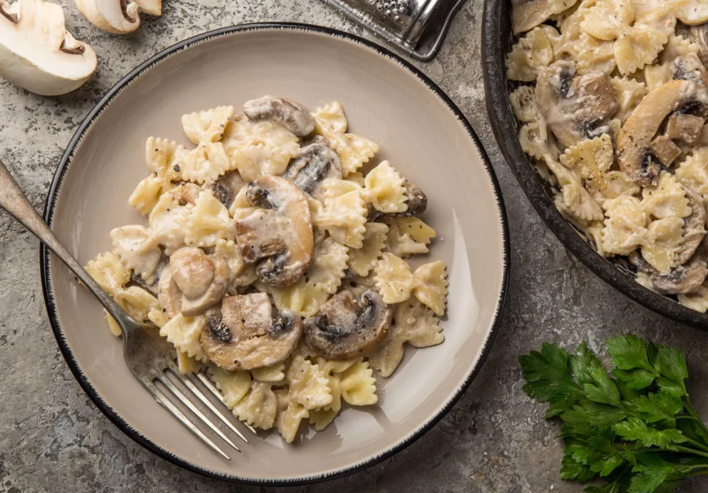

Главная
Фарфалле с курицей и грибами в сливочном соусе

Рецепт
Список ингридиентов
- Фарфалле - 250 г.
- Курица - 400 г.
- Грибы сезонные - 400 г.
- Сливки 20% - 500 мл.
- Лук репчатый - 1 шт.
- Чеснок свежий (зубчики) - 4 шт.
- Масло оливковое - 2 ст. л.
- Соль и перец - по вкусу
- Прованские травы - по вкусу
- Сыр твёрдый - 50 г.
Способ приготовления
-
Оливковое масло разогреть на сковороде и обжарить мелко нарезанный лук в
течение 2-3 минут.
-
Добавить куриное филе, нарезанное небольшими ломтиками, и обжаривать еще
5 минут.
-
Грибы промыть в проточной воде, нарезать и добавлять, как только курица
подрумянится. После чего посолить, поперчить, выложить очищенные зубчики
чеснока, прованские травы и тушить еще 7-10 минут.
- Фарфалле отварить аль денте согласно инструкции на упаковке.
-
Из соуса убрать зубчики чеснока, влить сливки, все перемешать и
дождаться пока сливки закипят. Сковорода должна быть с высокими бортами,
чтобы соус не вытекал в процессе помешивания.
-
Макароны откинуть на дуршлаг и переложить в сковороду к сливочному
соусу. Все ингредиенты прогреть в течение 1-2 минут.
-
Сыр натереть на мелкой терке и использовать для украшения при подаче.
Приятного аппетита!